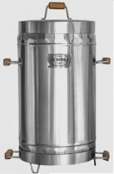

Barril asador
Este barril funciona con arena para absorber la grasa de los alimentos y los residuos que va soltando la carne, que es lo que genera el humo en los asadores
Ver mas BarrilParrilla
La parrilla o asador es un utensilio de hierro con forma de rejilla que se sitúa encima del fuego y encima de él lo que se ha de asar o tostar.
Ver mas ParrillaUtensilios
Por supuesto, no querrás quemarte los dedos, utilizar pinzas siempre es seguro y te permitirá tener mejor control en tu parrilla. Elige las pinzas adecuadas de acero inoxidable para no contaminar tus alimentos
Ver mas Utensilios
Muere Maradona
Diego Armando Maradona, el ídolo argentino que murió este miércoles de un paro cardiorrespiratorio, pudo haber sido el jugador de fútbol más grande de la historia. Pero fue mucho más que eso.
Leer noticia completa>>
Colombia escuchará a su primera filarmónica indígena
Vive en el resguardo indígena Emberá Chamí en Valparaíso, Antioquia. Tiene 14 años y es uno de los pocos niños de su comunidad que tiene su propio instrumento, un violín.
Leer noticia completa>>
Nacional Vs America
Nacional tuvo que remar contra la adversidad desde que regresó tras el largo confinamiento: resultados regulares, un fútbol poco vistoso, la eliminación de la Copa Sudamericana, las lesiones, la salida del técnico Osorio, las decisiones de la Dimayor, y ahora los contagios.
Leer noticia completa>>
COVID19: EE. UU. sobrepasa los 13 millones de casos
En solo 24 horas, el líder de los contagios y fallecimientos a nivel mundial registró 205.557 nuevas infecciones, llevándolo a incrementar su total de casos. En cuanto a las cifras, Europa sigue sus pasos en la segunda ola del virus, si bien las medidas y los confinamientos están haciendo que los datos diarios desciendan poco a poco.
Leer noticia completa>>Diego Fernando Serna Restrepo
Institución Educativa: Universidad de Antioquia
Edad: 34 años
Pastiempos: Futbol, Musica, Programación